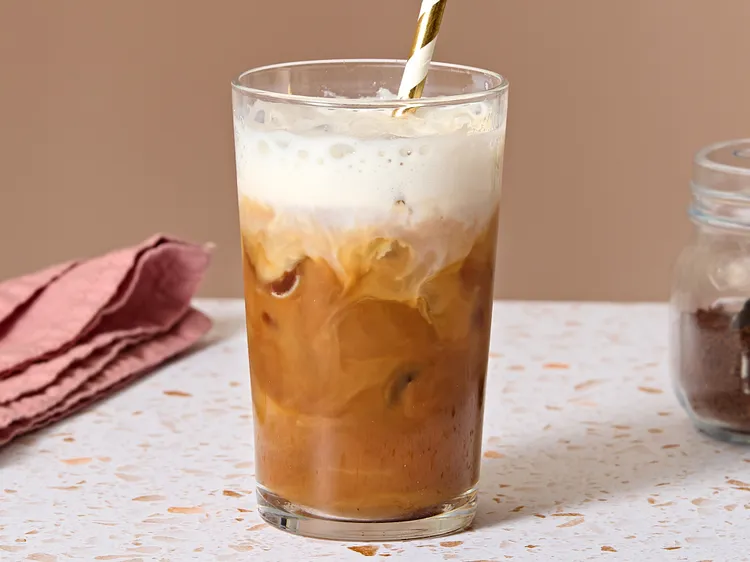

< back
Freddo Cappuccino

Description
Freddo cappuccino is a famous Greek iced coffee drink, enjoyed all over Greece, especially in summer.
It takes just two ingredients and a couple of minutes to make, and is so refreshing.
Ingredients
- 2 shots espresso
- sugar to taste (optional)
- 1/3 cup cold skim milk
Steps
- Gather all ingredients.
- Make espresso. Stir in sugar until dissolved; set aside.
- Froth milk with a handheld milk frother in a cup until foamy and doubled in volume, about 60 seconds.
- Fill a serving glass with ice cubes. Pour over the espresso, then top with the foamed milk. Serve and enjoy with a straw.